A vida é boa no meu C2B.

A C2B entregava empreendimentos com diferenciais nas áreas comuns, mas ainda era pouco reconhecida como incorporadora. Criamos uma assinatura para falar menos de metro quadrado e mais de vida acontecendo.
O desafio
A identidade da C2B se diluía nas campanhas dos próprios empreendimentos ou era confundida com a imobiliária parceira, com perda de reconhecimento e autoridade.
A ideia
A vida é boa no meu C2B. Padronizamos a identidade, criamos uma linguagem própria e destacamos o que todos os empreendimentos têm em comum: lazer, localização e praticidade.
O resultado
O novo posicionamento consolidou a C2B como incorporadora, com mais lembrança entre os clientes, mais visibilidade e mais engajamento nas redes, no ano em que a empresa completou 15 anos.
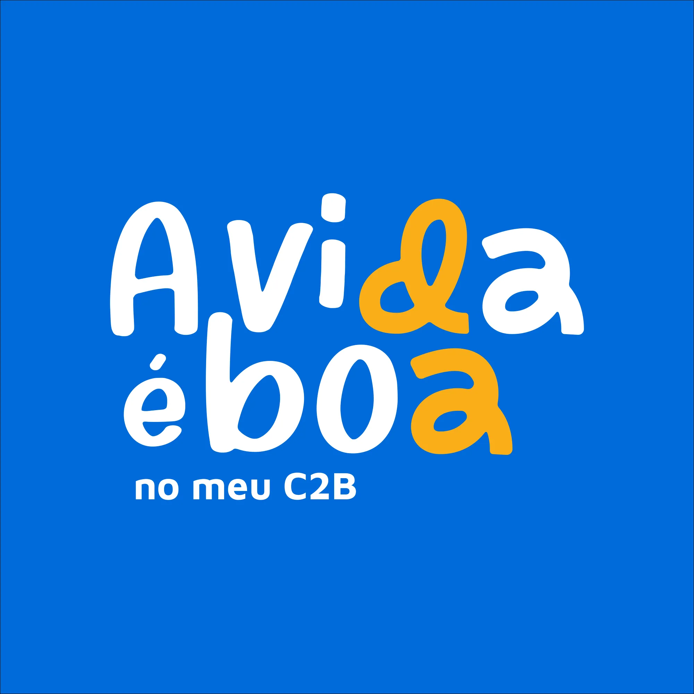
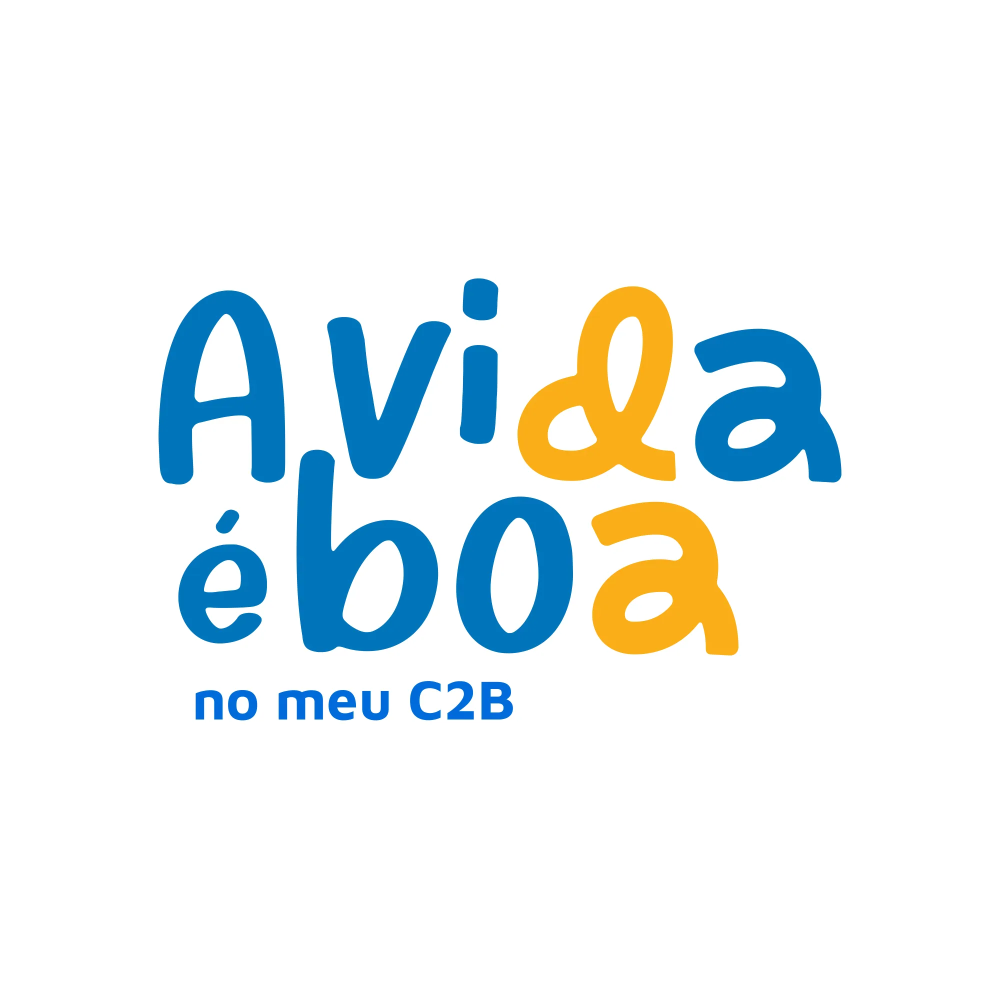
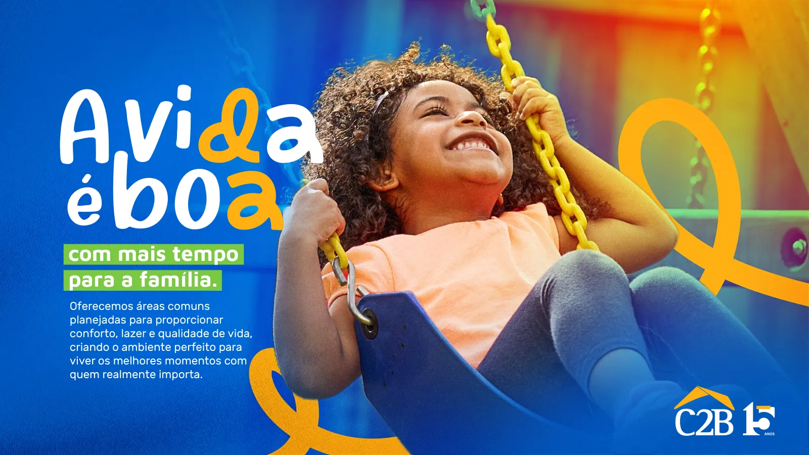
Uma linguagem só da C2B
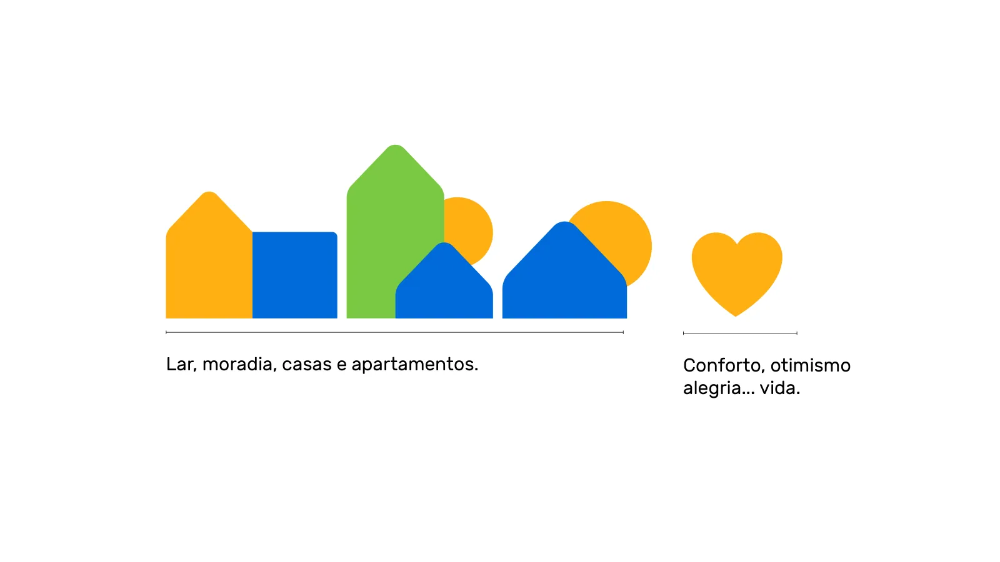
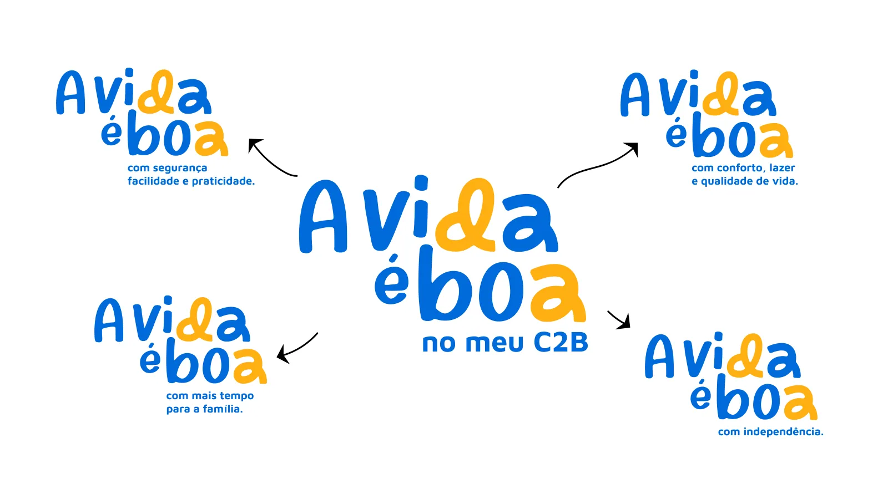
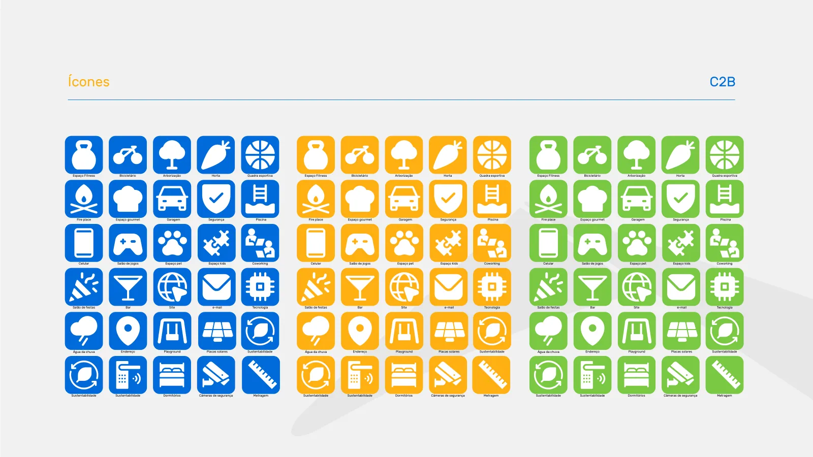
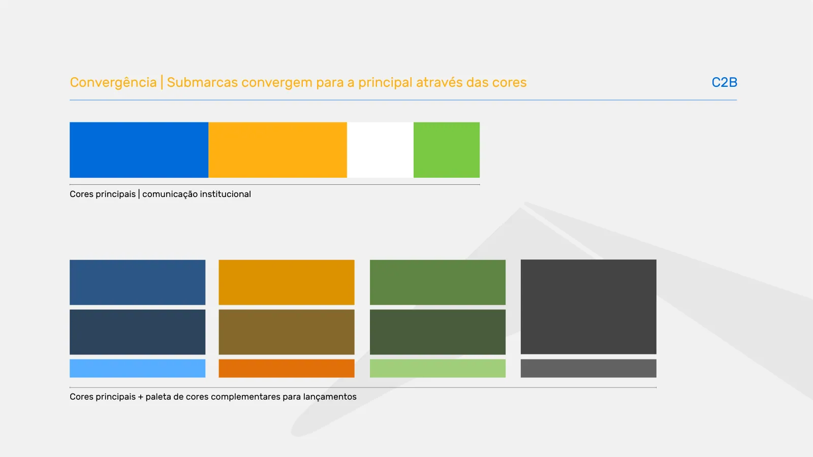
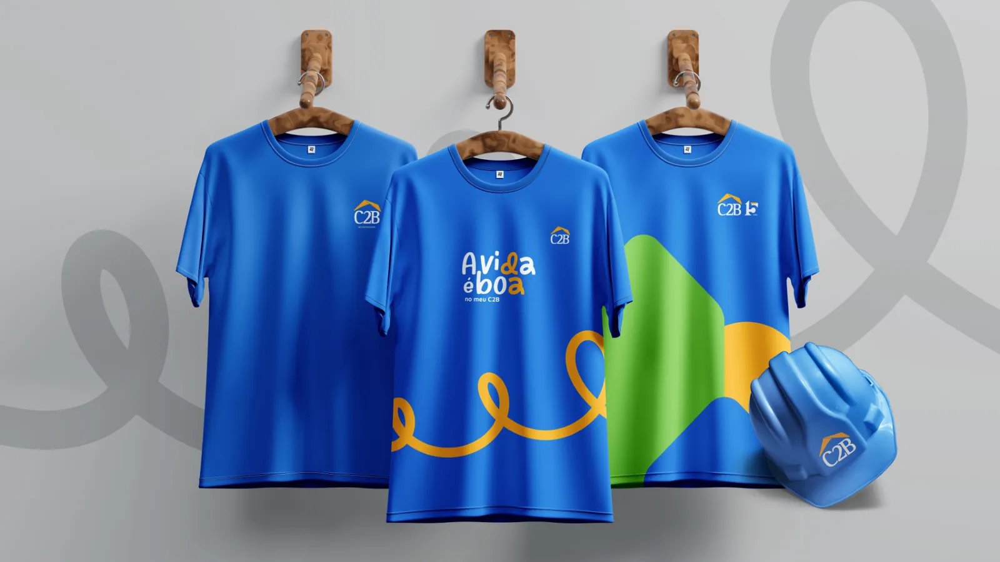
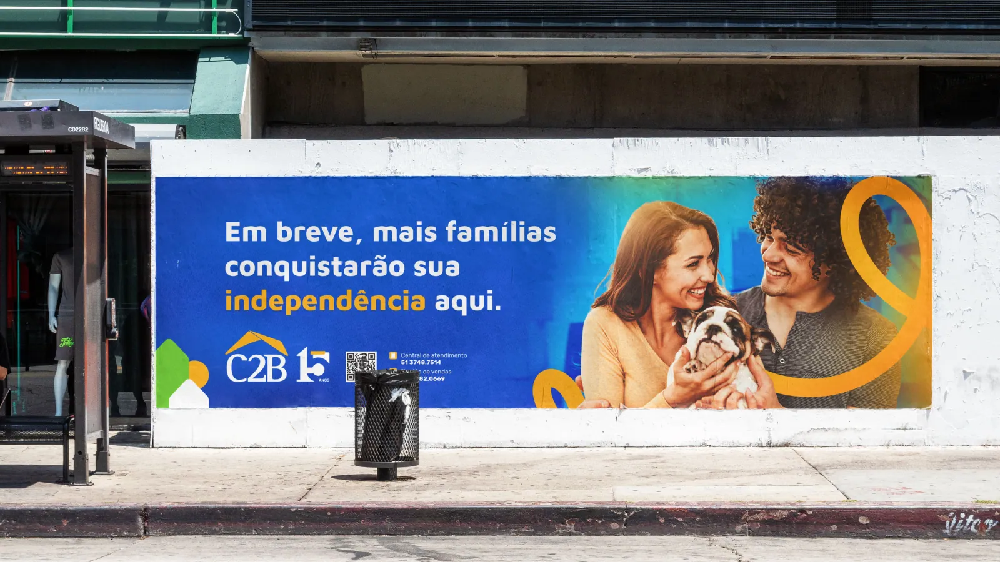
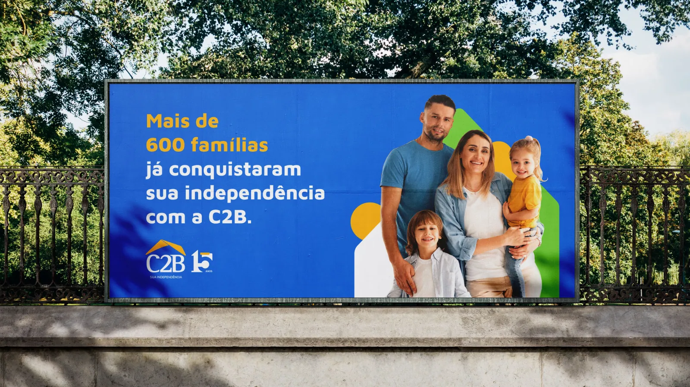
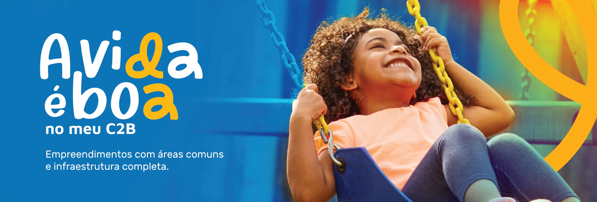
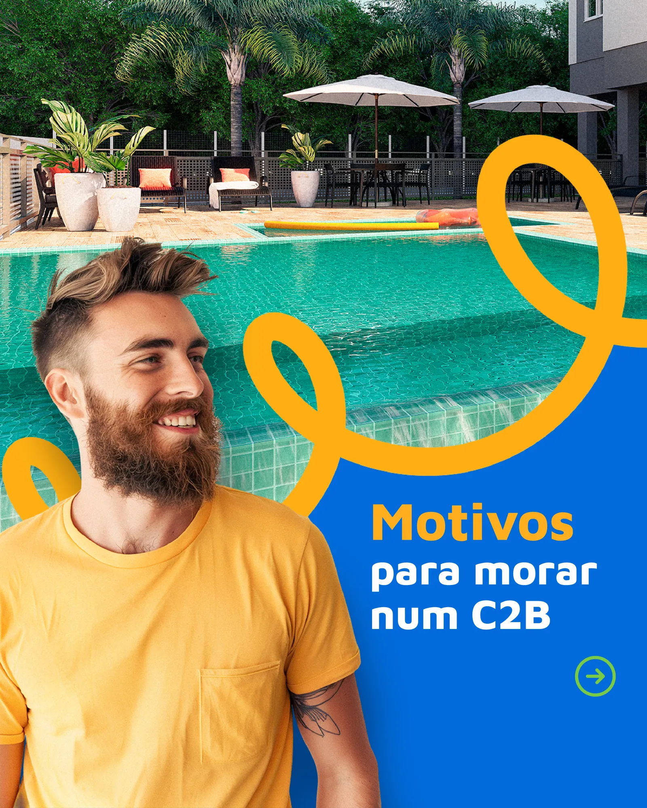
A vida é boa no meu C2B.